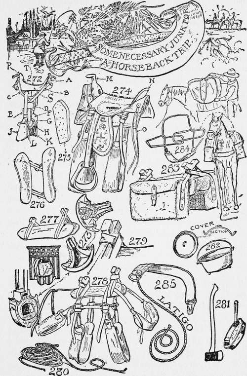

Choose A Saddle That Fits
Description
This section is from the book "The Book Of Camp-Lore And Woodcraft", by Dan Beard. Also available from Amazon: The Book of Camp-Lore and Woodcraft.
Choose A Saddle That Fits
Everyone knows the misery of an ill-fitting shoe, and no one in his right mind would think of taking a prolonged hike in shoes that pinched his feet, but everybody does not know that a saddle should fit the rider; an ill-fitting saddle can cause almost as much discomfort as an ill-fitting shoe. The best all-around sportsman's saddle in the world is the cowboy saddle of the West. A writer in the Saturday Evening Post, who has written a delightfully intelligent article on saddles, in speaking of the Western cow-puncher's saddle, says:
"There are many good riders who have never thrown a leg over any other sort of saddle, and for work on the plains or in the mountains no man who has used one would ever care for any other type. It is as much a distinct product of this continent as is the birch bark canoe or the American axe or rifle."
Like the cowboy hat, the diamond hitch and the lariat, the cowboy saddle is evolved from the Spanish adaptation of the Moorish saddle. The old-fashioned Spanish saddle with the heavy wooden block stirrups, not the bent wood stirrups, but the big stirrups made out of blocks of wood (Fig. 273) ;such a saddle with stirrups often weighed over sixty pounds. These saddles were garnished with silver and gold, and the spurs that the rancheros wore had big wheels with "bells" on them, and spikes longenough to goad the thick skin of an elephant. I formerly possessed one of the picturesque old saddles on which all the leather work was engraved by hand, by the use of some tool like a graver, probably a sharpened nail; consequently none of the designs was duplicated.
In the good old cow days there were two sorts of saddles: the"California Center Fire" and the "Texas Double Chinch," and all those that I remember seeing had rather a short horn at the bow with a very broad top sometimes covered with a silver plate; the seat was also much longer than it is to-day.
Fig. 272 shows a military saddle which is a modified cowboy saddle, and Fig. 274 shows a comparatively modern cowboy saddle. The up-to-date saddle of to-day has a bulge in front, not shown on the diagram.
In the olden days there were no societies for the prevention of cruelty to animals, and on the ranges horses were plenty; therefore, when one of the long-haired plainsmen, with his long rifle in front of him on the long saddle, and the heavy Spanish-American trappings to the horse, killed the horse by overwork, he simply took off his saddle and trappings, caught another horse, mounted it and continued his journey; there were plenty of horses—why should he worry?
Later when the cowboy age came in, the cowboys themselves on the Southern ranges used the Spanish-American outfit; the only blessing the poor horse had was the blanket under the saddle.
Pack Train Outfit
When the block wooden stirrups were abandoned and the thinner oval stirrups adopted, the latter were protected by long caps of leather, the dangling ends of which were silver tipped. The cowboys themselves wore heavy leather breeches called chaps (an abbreviation of the Spanish chaparejo). Thus with the feet and legs protected they could ride through the cactus plants and dash through the mesquite country without fear of being pricked by the thorns,no matter what happened to the horse. Not only did this leather armor protect them from thorns and branches, but it also prevented many a broken leg resulting from kicks by burros, mules and horses.
The rolled coat or blanket, which the bronco busters on the lower ranges in early times lashed across the horse in front of their seat, is the thing from which the bucking roll was evolved, and the buckskin bucking roll, we are told, is the daddy of the swell or bulged front saddle now used.
The old-fashioned cowboy saddle has a narrow front, but about two decades ago
Continue to: